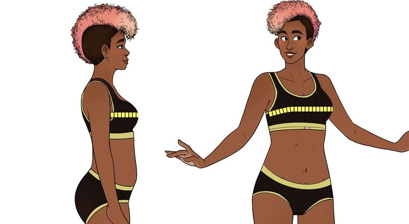
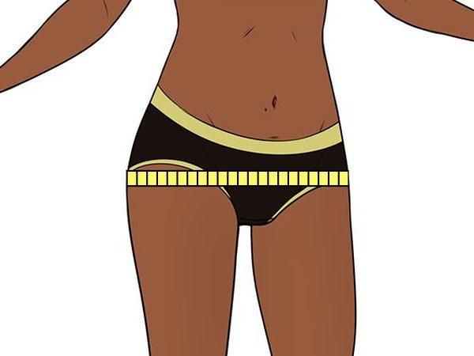

Seven measurements are enough. Take them on yourself or on the person concerned, in underwear or very thin clothes, with the tape laid flat against the body, not tight. For the bust measurements, wear the bra you will wear under the dress.
Choose your size and height on the first screen to pre-fill them: then correct the ones you can take.
To check first: bust front, high bust front, front waist length, hip.

Bust, front partcheck : The front part of the bust circumference: over the fullest part of the bust, from one side seam to the other.High bust, front partcheck : The front part of the high bust circumference: just under the arms, above the bust, from one side seam to the other.Front waist length : From the high point of the shoulder (next to the neck), straight down the front to the waist, over the bust without dipping under it.

Hip circumference : Around the fullest part of the seat, keeping the tape level.Shoulder width : Across the back, from one shoulder tip to the other. The shoulder tip is the point of the bone where the top of the shoulder meets the arm: that’s where the shoulder seam of a well-fitting shirt sits.Distance between bust points : In a straight horizontal line, from one bust point to the other.Shoulder to bust level : From the high point of the shoulder, straight down to the bust line. Hold the tape with the opposite hand: raising the arm on the side you measure can throw the result off by about 2.5 cm (1 in). Best of all, have someone measure you.
Is someone sewing for you?
Take your measurements with this guide, enter them on the pattern page, then click “Share”. The person sewing for you will receive a link that opens the pattern already set to your measurements. The link goes through no server: your measurements go to them only.